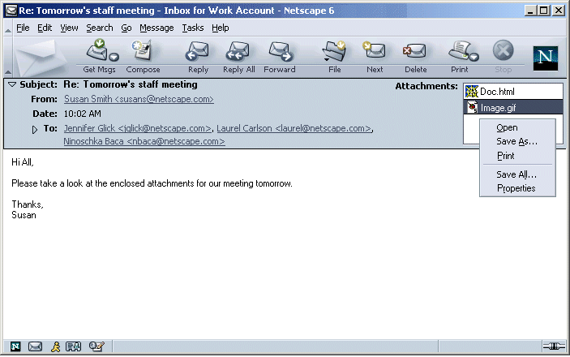
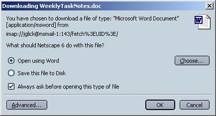
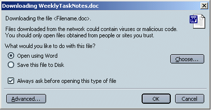
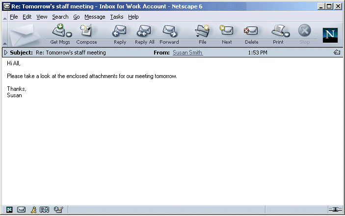

|
Mojo/Mozilla: Mail: Attachments |
UI Specification
|
|
Attachments in an Open Msg |
Last Modification: |
|
Author: Jennifer Glick |
Status: Implementable |
||||||||||||
|
Quicklinks: |
Feature Team
Please post all comments and suggestions regarding this spec to the newsgroup, netscape.public.mozilla.mail-news. |
In an open message, make attachments more apparent and accessible to users.
This applies to both the Message Pane in 3 Pane Mail and the Standalone Mail window.
Attachments are shown in a scrollable list in the right corner of the envelope area. A document specific icon is displayed when possible to give a visual indication of the file type. A generic "document" icon is displayed if the file type is not known.
Note: If a message does not contain attachments, the attachments listbox is not displayed.
Potential Future Feature: The size of each attachment is displayed in parenthesis following the attachment name.
If attachments can be displayed inline, and the user has turned on the preference for this (pref not currently implemented), they are displayed inline below the body of the message.
The menu contains: Open, Save As and Save All.

Potential Future Features: Print menu item. Properties menu item. Properties would bring up a dialog displaying size and file type information about the selected attachment.
Potential Future Feature: Users can Shift+Click or Ctrl+Click to select multiple attachments.
If No items in the attachment list are selected, only the "Save All" context menu item is enabled. All other context menu items are disabled.
Double clicking on a single attachment attempts to open the attachment.
If the attachment is something the browser can display (such as a .gif or .html file), it is displayed in a new browser window. If it is something the browser can not display and a helper application is needed, the "Open/Save Attachment" dialog is displayed allowing the user to open or save the attachment.
Note: this dialog is currently being generated by the browser team so the specific UI has not yet been finalized. It will also contain text that explains to users the security risks of opening files from the network.
Current

Suggested

If the user unchecks "Always ask me before opening or saving files of this type", the next time they double click or open a file of this mime type, they will not get this dialog.
If the user selects "Open" directly from the content menu or "File: Open/Save Attachment" menu, the file is displayed in the browser if possible, or the "Open/Save Attachment" dialog is opened if necessary.
If a known helper app is available, "Open" is selected by default on the dialog and the suggested helper app is displayed. If no known helper app is available, "Save" is selected by default.
A twistie icon appears to the left of the "Subject" text. When the twistie is clicked, the envelope area collapses. Clicking the twistie again expands the envelope area. If a message has attachments, an attachment indicator icon is displayed in the right corner. Clicking the attachment icon expands the envelop area to display the list of attachments.
Potential Future Feature: Left click expands envelope area, right click/context click shows a flyout menu of available attachments.

The File menu of an open message is as follows:
New Message ---Ctrl+M
New --->
Open Message ---Ctrl+O
Open/Save Attachment ---> List of attachments in the current
message---> Open
-----------------------
-----------------------------
------
Close
---Ctrl+W
Save
All... Save
Save As --->
ETC.